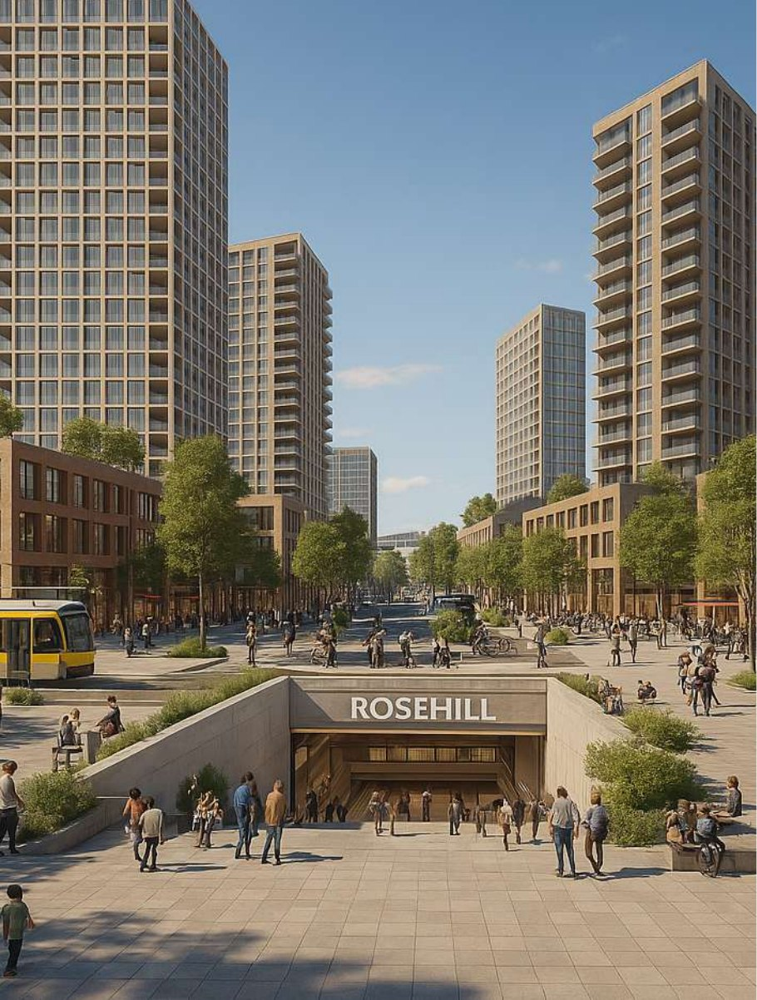
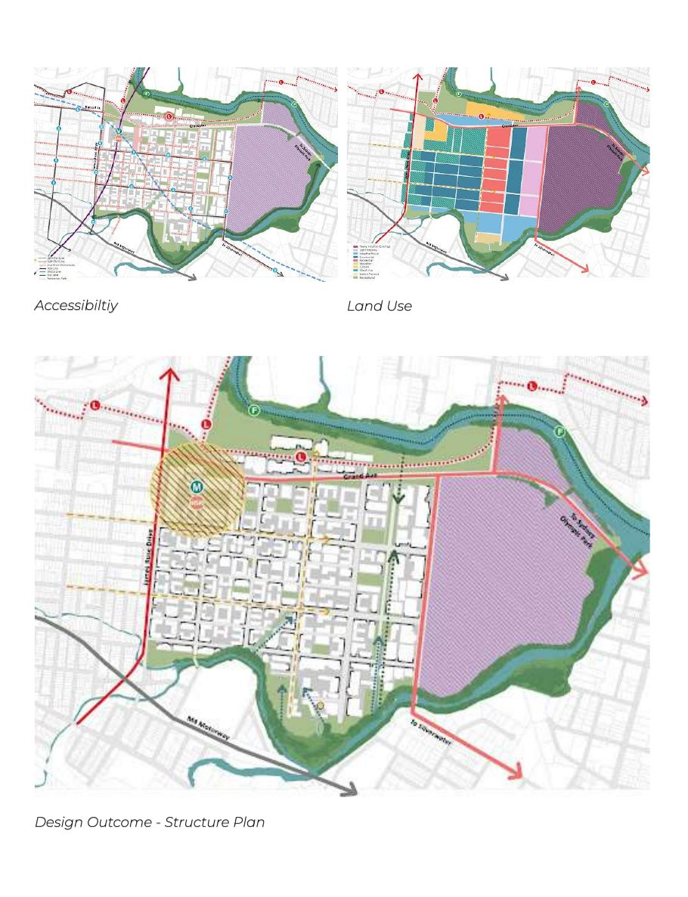
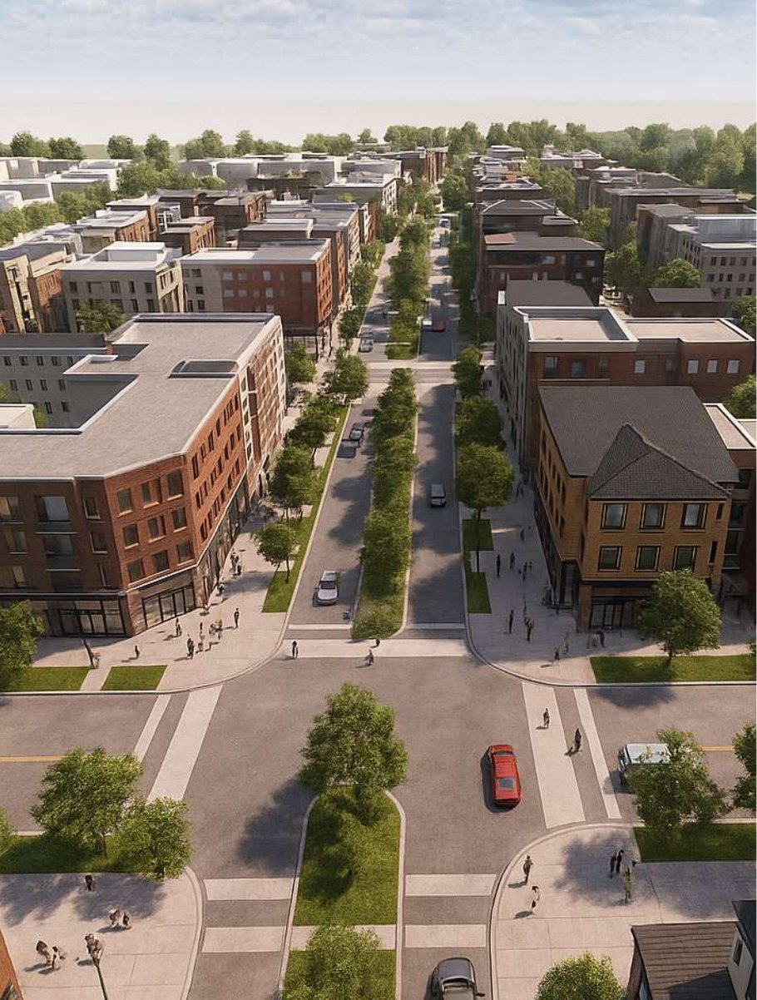
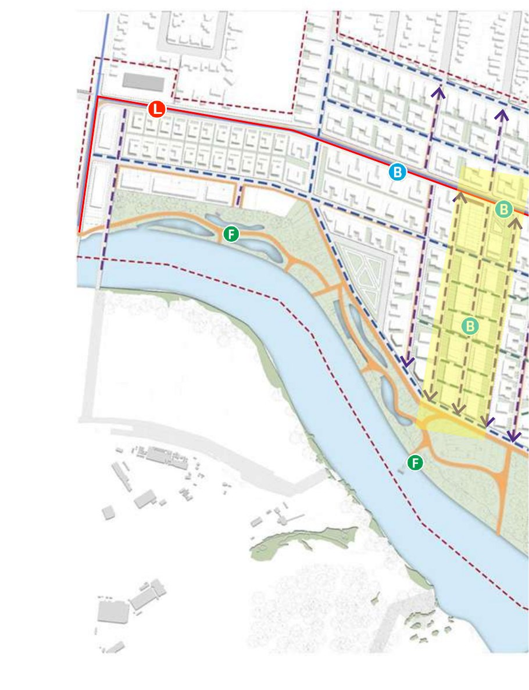
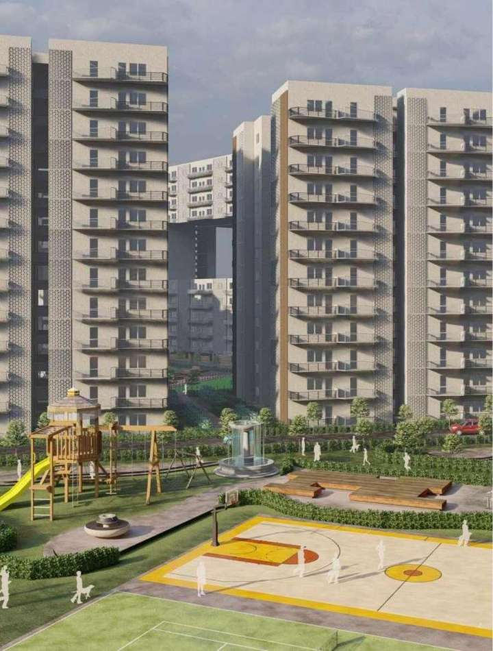
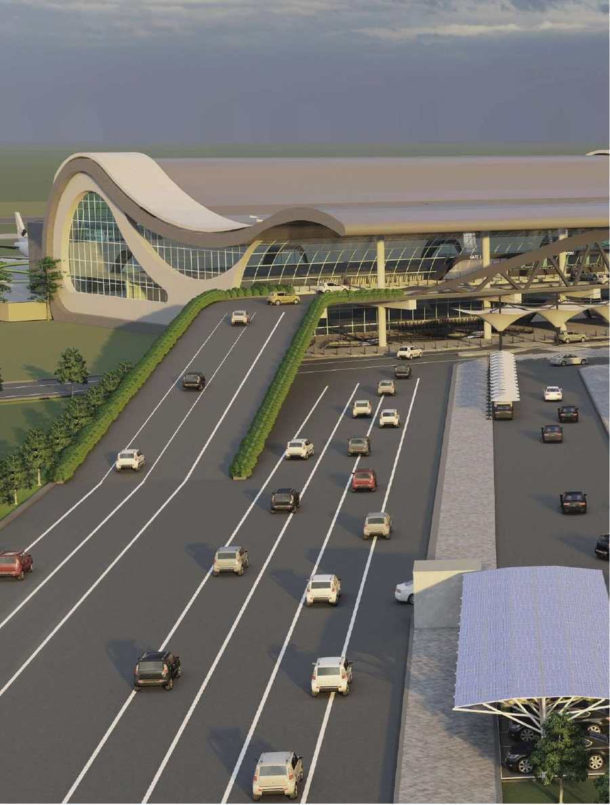
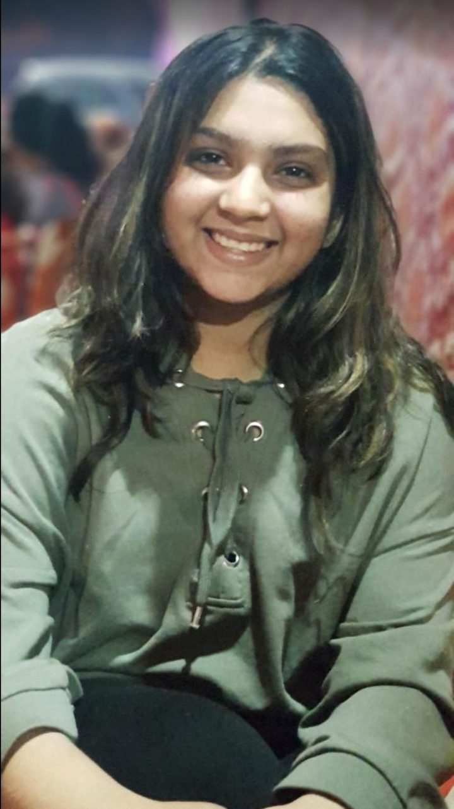

You own land in NSW and have an idea: a subdivision, a dual occupancy, townhouses, or something bigger. Before you spend on designers and consultants, I will give you an honest first take: what your zoning allows, what could hold the site back, and what to do next.
Flood planning area — a flood study would be needed. No heritage item on the lot.
First take
A dual occupancy or a two-lot subdivision may be possible, subject to lot width and the full set of controls.
R2 zoning9.5 m height0.5:1 FSR450 sqm min lot
This is what the free check looks like. Yours is run on your real address.
01 — Selected works
Selected Works | 2020–2025
NSW projects first — precinct, subdivision and DA work from my Sydney studies, each labelled honestly as academic work.

Academic · Urban design studio · 2025
Rosehill High-Speed Rail Precinct
A strategic summary of the proposed high-speed rail station at Rosehill–Camellia in GPOP, built on three strategies — Country Engagement (Country-led design, with green spines to the water's edge), Adaptive Reuse and Active Frontage — with a structure plan, accessibility and land-use mapping. On James Ruse Drive, the work tested protected (Dutch-style) intersections, walkability upgrades, at-grade integration and a tunnel option. Integrated Urbanism Studio, Master of Urbanism, University of Sydney, 2025.

Structure plan diagrams for the precinct — the existing street pattern beside the proposed layout. Academic work.

Academic · Urban design · 2024
Rydalmere Vision 2050
A precinct vision for Rydalmere in Greater Sydney, starting from flooding analysis on the Parramatta River, road connectivity and vegetation. The plan works through light rail and riverfront infrastructure — the South Street stop and the Camellia–Rydalmere Bridge — with restored wetlands and Eric Primrose Reserve as green-blue infrastructure, guided by precedents including The Goods Line, Barangaroo, Green Square Town Centre and Sydney Olympic Park. Urban Design studio, University of Sydney, 2024.

The Rydalmere masterplan — river, wetlands and light rail (L), bus (B) and ferry (F) connections. Academic work.
Illustration only — an abstract street-plan motif, not a photograph or plan of the actual precinct.
Marion Street Precinct
Leichhardt, Inner West Sydney — 3.6 ha, beside the Marion light-rail stop
Academic · Strategic planning · 2024
Marion Street Precinct, Leichhardt
A review of a planning proposal to amend the Leichhardt LEP 2013 for this 3.6-hectare precinct, tested against the Leichhardt Industrial Lands Study and the Eastern City District Plan. The work included a lot-by-lot land-use survey and land-use, zoning, movement and topography mapping, and recommended mixed use that adds housing while keeping employment land. Strategic Planning in Action, University of Sydney, 2024. Academic work.
Illustration only — an abstract street-plan motif, not a photograph or plan of the actual street.
54 Canonbury Grove
Dulwich Hill, Inner West Sydney — residential upgrade in a Heritage Conservation Area
Academic · Development assessment · 2023
54 Canonbury Grove, Dulwich Hill
Full DA documentation for a residential upgrade in a Heritage Conservation Area, including a Statement of Environmental Effects, applying BASIX, SEPP, LEP and DCP controls — the same documents and the same tests a real DA is judged on. Development Assessment, University of Sydney, 2023. Academic work.
Earlier architecture studies, India

Academic · Architecture · 2021
Stithiban Group Housing, Dwarka
Group housing on a 4.88-hectare site in Sector 19B, Dwarka (2021): four buildings with towers aligned for natural light and prevailing wind, a sky bridge between towers, and a central water body at the heart of the shared landscape. Homes were planned as 2 BHK at 100 sqm and 120 sqm, and 3 BHK at 130 sqm, with a separate EWS parcel and amenities including a basketball court, tennis, a playground and a senior-citizens area. Architectural Design studio project, Bachelor of Architecture.

Academic · Architecture thesis · 2023
Mandi Airport, Himachal Pradesh
A greenfield airport at Nagchala, about 10 km from Mandi town in the Balh valley, crossed by three khads — Suketi, Kansa and Chail — so flooding, channelisation and land filling were core design challenges. The terminal's wave roof is inspired by aircraft wings. Arrival 3,100 sqm, Departure 4,720 sqm, Service/Basement 2,720 sqm, parking for 421 cars, runway 06/24. Final-year architecture thesis, 2023.
How the work gets tested and explained
GIS and 3D modelling are not decoration — they are how controls get tested before you commit. I work across QGIS and ArcGIS, AutoCAD, Revit, SketchUp, Lumion, Enscape and V-Ray, with Adobe Suite (Photoshop, Illustrator, InDesign) and Python — including GIS-to-BIM workflows, envelope and yield testing against planning controls, and solar and overshadowing analysis — then turn the results into diagrams and renders a landowner or a council panel can actually read.
02 — How it works
How it works
Three steps, in the order that protects your money: understand the land first, then test what it can become, then design and lodge.
1
Free chat + Quick Zoning Check
Free — start here
Tell me about your site or idea. I check the zoning, key LEP controls and obvious constraints, and give you an honest first take and your likely pathway — exempt, CDC or DA.
2
Feasibility — what the land can become
If the first take is promising, a feasibility and yield study tests it properly: what you can build, how many lots or dwellings, and what is holding the site back.
3
Concept design + DA support
Concept layouts and massing that fit the controls, then support through the application — coordinating consultants, the Statement of Environmental Effects, Clause 4.6 requests and council RFI responses.
Exempt, CDC or DA — which pathway applies?
Step 1 works out which approval pathway your site and idea fall under. Exempt development is small, low-impact work that meets strict state standards — if it genuinely fits, no approval is needed at all. A CDC (Complying Development Certificate) is a fast-track, rules-based approval from a council or private certifier for work that meets predetermined controls — many houses, dual occupancies and some subdivisions can qualify. A DA (Development Application) goes to council for a merit assessment — for anything that does not fit exempt or CDC rules, or that needs flexibility, such as a variation argued through a Clause 4.6 request.
General information only, to help you understand the system. Which pathway applies to your property depends on your site and your proposal — that is exactly what the free zoning check and chat are for.
03 — The free guide
The 7 costly mistakes
The free guide, in full, on this page — no email required. The mistakes NSW landowners most often make before subdividing or applying for a DA, and what to do instead. General information, not a promise about any particular site — your site gets its answer in the free check. Download the free guide (PDF) →
01 Designing before checking the controls +
The most expensive drawings are the ones for a building the LEP was never going to allow — too tall, too much floor space, or a use that is not permitted in the zone at all. By the time council says no, the design fees are already spent.
Do this instead: Check zoning, height, FSR and minimum lot size before any design work. Thirty minutes with the controls can save an entire design fee.
02 Judging a subdivision by land size alone +
“My block is 1,200 square metres, so I can get two lots” sounds logical — but subdivision turns on minimum lot size, lot width and frontage, access, slope, services and how the resulting lots are shaped, not on area alone. Plenty of large blocks cannot split; some smaller ones can.
Do this instead: Test the actual controls for your lot — minimum lot size and width first — before assuming a yield, or pricing the land on one.
03 Discovering flooding, bushfire or heritage late +
Constraints do not stop every project — but finding out about a flood study, a bushfire assessment or a heritage listing after you have designed, bought or lodged can mean redesigns, extra consultants and months of delay.
Do this instead: Flag the obvious constraints at the very start, the way the free Quick Zoning Check does, and let them shape the idea while changing it is still cheap.
04 Forgetting access, parking and services +
A layout can comply on paper and still fail in practice: no workable driveway, no room for parking and turning, stormwater with nowhere to go, or lots that cannot be serviced. Councils and certifiers test all of this — late changes here are painful.
Do this instead: Think about access, parking, stormwater and services at concept stage, alongside the buildings — not as an afterthought once the design is finished.
05 Picking the wrong approval pathway +
Lodging a DA for something that could have been a CDC wastes months. Assuming a CDC for something that was never going to comply wastes fees — and sometimes a certifier has to stop the job. The pathway is a decision, not a formality.
Do this instead: Work out early whether your project is exempt, complying development or a DA — and design to the pathway you are actually on.
06 Reading the LEP and stopping there +
The local LEP is only one layer. State policies (SEPPs) sit over the top — the Housing SEPP alone changes what is possible for dual occupancies, co-living and secondary dwellings — and the local DCP adds detailed controls on top of both. Checking one layer and missing the others gives you the wrong answer with confidence.
Do this instead: Check all three layers — SEPPs, LEP and DCP — together. That layering is exactly what planning research is for.
07 Spending in the wrong order +
Full architectural design, surveys and a shelf of consultant reports — all commissioned before anyone has tested whether the idea stacks up. If the feasibility fails, almost none of that spend can be reused.
Do this instead: Sequence the spend: free check first, then feasibility, then concept, then the consultants a DA actually needs. Each step earns the next one.
Read a mistake that sounds like your situation? That is what the free chat is for — bring the site, and you will get the honest version for your land, not the general one. Book the free chat →
04 — Paid services
Services, when you're ready
After the free check — once you know your land is worth a closer look. No fees are listed here on purpose: the right scope depends on your site, and the free chat is where that gets worked out honestly.
A note on scope: concept design and massing here is planning and concept-level work — testing what a site can hold and how it could be arranged. It is not architectural documentation, and it is not a substitute for engaging a registered architect where your project needs one.
Site feasibility and yield studies
What you can build, how many lots or dwellings, and what's holding the site back.
Planning research and briefing notes
Permissibility, LEP/DCP controls, SEPPs and precedent approvals, written up in plain English.
Subdivision and lot layout design
Concept layouts, road and access options, staging.
Concept design and massing
Houses, additions, dual occupancies, townhouses and mixed-use buildings, including solar and overshadowing studies.
3D renders and visualisations
For marketing, council presentations or just seeing your project before it's built.
DA support
Coordinating consultants, preparing statements of environmental effects, Clause 4.6 variation requests and responses to council RFIs.
Urban design reports
Design rationale and context analysis for larger projects.

05 — About
Hi, I'm Mish.
I'm an urban designer based in Sydney, working across planning, subdivision and built-form design in NSW.
I hold a Bachelor of Architecture (Guru Gobind Singh Indraprastha University, Delhi) and a Master of Urbanism (Urban Design) from the University of Sydney. Day to day I work on everything from rural subdivisions and multi-dwelling housing to mixed-use towers and co-living projects.
My job is to help people understand what their land can become, and to get a good idea through council with as little friction as possible.
In my own words, I am “deeply interested in designing cities and the broader stories that they tell… making meaningful, resilient, and place-sensitive urban areas that improve the community life and their built world.”
How I started
I started in Delhi, completing my Bachelor of Architecture at Guru Gobind Singh Indraprastha University in 2023 and working as an Architectural Assistant at Creative Group, New Delhi, on large-scale infrastructure and airport projects. I then moved to Sydney for my Master of Urbanism (Urban Design) at the University of Sydney, completed in 2025. In 2026 I completed a planning internship at Dela Architects in North Sydney, and I now work as an Urban Designer at Land Specialists Pty Ltd. The free first take comes from the same belief I started with: good design and good planning shouldn't feel out of reach.
“Deeply interested in designing cities and the broader stories that they tell… making meaningful, resilient, and place-sensitive urban areas that improve the community life and their built world.”
The Rosehill–Camellia structure plan — accessibility, land use and design outcome — from my Master of Urbanism studio work at the University of Sydney. Academic work. This is the kind of plan that sits behind every honest answer about what a precinct — or a single site — can become.
The work, day to day
Recent and current work at Land Specialists — the same kind of questions landowners bring to the free chat:
SSD mixed-use tower, NSW Central Coast
Urban design rationale for a mixed-use tower assessed as State Significant Development — built form, podium and street wall, through-site links and solar access. I tested three built-form options with comparative FSR, floor-plate and dwelling-yield tables, and took part in the council Design Advisory Panel workshop, translating panel feedback into design revisions.
Clause 4.6 variation arguments
Building the case for variations to lot width and minimum lot size controls, from precedent approvals, determinations and DCP controls.
Six-storey co-living development
Coordinating the project after its pre-DA meeting — working to bring the floor space ratio under the LEP maximum, preparing the co-living Plan of Management, and coordinating consultants and council feedback.
Statements of Environmental Effects
Writing SEEs for a detached dual occupancy on partly flood-affected land, and for a split-zoned (RU2 / R2) subdivision.
Site selection across a whole LGA
Running a site selection study across an entire local government area — permissibility, servicing, access and bushfire checked site by site, using GIS to shortlist.
The person consultants call
I am the primary point of contact for surveyors, civil engineers, bushfire and flood consultants, architects and landscape architects across concurrent live projects — including preparing a Construction Certificate RFI response — alongside council, client and consultant liaison and Design Advisory Panel workshops.
Planning skills behind the check
Planning proposals, and State Significant Development (SSD) and SEARs work
Envelope testing against planning controls
Podium and street wall, through-site links and public domain
Precedent and case-law research
Structure plans and masterplans
DCP-style design guidelines
Constraints I check for
Heritage items and Heritage Conservation Areas
Bushfire — assessed under Planning for Bush Fire Protection (PBP) 2019
Flooding
Riparian and buffer zones
Easements
Servicing
Why I'm different
I studied both architecture and planning, and I work with NSW planning rules every day — so I can tell you early whether an idea is worth pursuing.
1
Trained in both architecture and planning
I hold a Bachelor of Architecture and a Master of Urbanism (Urban Design), so I read a set of drawings and a set of planning controls with the same eyes. I understand how controls shape what actually gets built, not just what looks good on paper.
2
Planning first, design second
My check comes before the sketch: zoning, LEP, DCP and SEPP controls, and constraints like flooding, bushfire and heritage — first. That order matters, because money spent designing something the controls will never allow is money that does not come back.
3
An honest first take, free
In a free 20–30 minute chat, I will tell you whether your idea is worth pursuing — including when the answer is no. That is the opposite of a vendor who needs the fee first and finds the problems later.
4
Plain English, not planning jargon
I write planning research and briefing notes so a landowner can actually use them: what is permitted, what is holding the site back, and what to do next. My goal is that you finish the conversation thinking, “Now I finally understand what my land can become.”
Not sure what you need? Start with the free chat and we'll work it out together.
Bring the address and the idea — half-formed is fine.
What happens after you book
No pitch, no pressure. This is the whole sequence:
1 · I call you
At the time that suits you, for the free 20–30 minute chat — or I run the Quick Zoning Check on the address you sent.
2 · I ask about your site
Where it is, what you're hoping to do with it, and what's worrying you about it. You do most of the talking.
3 · You get the honest first take
Whether the idea looks worth pursuing, what could hold the site back, and what the next step would be. If the answer is “don't spend on this”, you'll hear exactly that.
What does it cost?
The first chat and the zoning check are free. If you want a feasibility study or design work after that, I will send you a written scope and a fixed fee in advance, before you decide anything.
06 — Book
Book the free chat, or ask for the free zoning check
I help landowners across Greater Sydney, the Central Coast and the Hunter. If your land is elsewhere in NSW, send it anyway and I will tell you honestly if I can help.
Tell me where the land is and what you're thinking of doing, and I will reply to arrange the chat — or run the check: zoning, height, FSR, minimum lot size and any obvious constraints. No fee, no obligation, no hard sell.